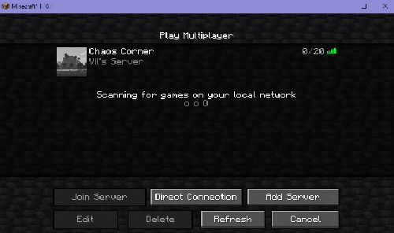

Projects
Debian Linux based Minecraft Server
Work with Debian Linux based OS to create a Minecraft server which runs multiple plugins and wrote bash scripts to streamline start/stop/restart functions and crash fail-saves of that server. Provid support and trouble shooting to ensure server stays running and have upgraded hardware and software versions while maintaining functionality and playability for players on the server.
Long description which will go in to more detail on what I did and include more pictures
Personal Website
print("hello World!")
This website that you are on right now is a project I worked on. Currently it only uses HTML but I have plans to add CSS and JavaScript to it as well
A future plan for this website is to host it on my server computer and continue to update it as a one stop portfolio and resume.
Project 3 - WIP
Still working on gathering all the information for this one. For now it's a work in progress